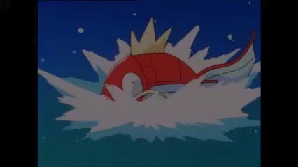
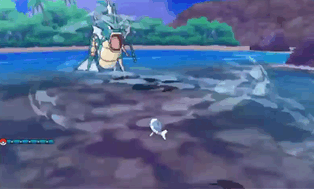
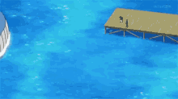
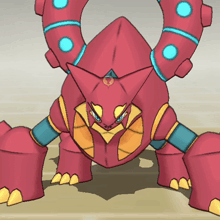
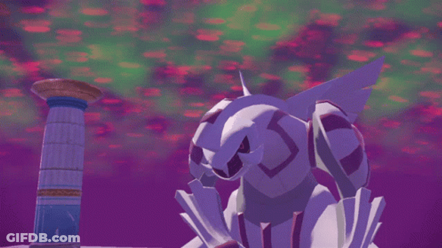
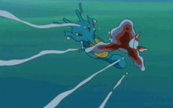
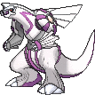

Océanos y mares abiertos
Grandes extensiones pelágicas donde se localizan criaturas de enorme tamaño corporal o adaptadas a largas migraciones marinas.
Especies representativas: Lapras, Wailord y Kyogre.
04 / TRANSFORMACIÓN, ENTORNOS Y MECÁNICAS
Un estudio integral sobre las transformaciones morfológicas y estadísticas en las especies acuáticas, la diversidad de hábitats que habitan en los videojuegos, las habilidades pasivas de combate, el impacto del clima lluvioso y los movimientos insignia del elemento Agua.

DINÁMICAS EVOLUTIVAS, HÁBITATS Y ESTRATEGIA DE COMBATE
4.1
La evolución Pokémon es una transformación dentro de los videojuegos: la especie cambia de forma y, por lo general, también experimenta un incremento notable en sus estadísticas base. Puede activarse al alcanzar un nivel determinado de experiencia, al utilizar una piedra evolutiva, al intercambiar el Pokémon portando un objeto específico o al cumplir condiciones especiales de afecto o belleza. No todas las especies evolucionan y algunos métodos dependen del título de la franquicia consultado (BULBAPEDIA, s. f.).
| Línea evolutiva | Método o condición | Qué ilustra en las mecánicas de juego |
|---|---|---|
| Magikarp → Gyarados | Alcanzar el Nivel 20 | Cambio drástico de aspecto, temperamento y capacidades ofensivas. |
| Squirtle → Wartortle → Blastoise | Niveles 16 y 36 | Línea evolutiva clásica y gradual de tipo Agua puro en tres etapas. |
| Poliwhirl → Poliwrath / Politoed | Piedra Agua / Intercambio con Roca del Rey | Demuestra cómo una misma etapa puede conducir a evoluciones radicalmente distintas en tipo y rol. |
| Eevee → Vaporeon | Exposición a Piedra Agua | La evolución depende del uso de un objeto evolutivo mineral directo. |
| Feebas → Milotic | Condición especial según el juego (Belleza / Escama Bella) | Ejemplo de metamorfosis no basada únicamente en la acumulación de experiencia por nivel. |
Las formas regionales son variantes biológicas adaptadas al contexto ficticio y clima de una región concreta. Algunas conservan la afinidad de tipo Agua y otras la pierden por completo. Por ejemplo, el Wooper de Johto (Agua/Tierra) conserva el tipo Agua, mientras que el Wooper de Paldea (Veneno/Tierra) lo sustituye para adaptarse a suelos enfangados con toxinas. De forma análoga, el Qwilfish de Hisui (Siniestro/Veneno) pierde la afinidad acuática. Conviene registrar y analizar cada forma por separado para no generar ambigüedades documentales (BULBAPEDIA, s. f.).
4.2
Los Pokémon de tipo Agua aparecen en mares, océanos, costas, ríos, lagos, pantanos y cuevas inundadas. Los videojuegos representan estos lugares mediante rutas acuáticas navegables mediante Surf, zonas de pesca con cañas de diferente graduación, áreas submarinas accesibles mediante Buceo y cuerpos de agua dulce interiores. La disponibilidad de cada especie depende rigurosamente de la región y del título; no debe suponerse que un Pokémon aparece en todos los ambientes con presencia de agua (BULBAPEDIA, s. f.).
Grandes extensiones pelágicas donde se localizan criaturas de enorme tamaño corporal o adaptadas a largas migraciones marinas.
Especies representativas: Lapras, Wailord y Kyogre.
Corrientes continentales, manantiales y lagunas interiores de agua dulce y corriente tranquila.
Especies representativas: Goldeen, Poliwag y Psyduck.
Playas intermareales, acantilados y fondos costeros habitados por especies con caparazones o corazas rígidas.
Especies representativas: Krabby, Shellder y Clauncher.
Marismas, llanuras inundables y aguas turbias ricas en fango donde prosperan criaturas anfibias de doble tipo.
Especies representativas: Wooper y Quagsire.
4.3
En el plano estratégico, una habilidad es una característica pasiva o automática que puede producir efectos durante el combate o fuera de él. Un movimiento, en cambio, es una acción ofensiva o de soporte que el Pokémon ejecuta durante su turno. No deben confundirse: Llovizna es una habilidad; Surf es un movimiento.
| Habilidad | Efecto esencial en combate | Especies de ejemplo |
|---|---|---|
| Llovizna | Invoca automáticamente el clima de lluvia al entrar en combate. | Kyogre, Politoed |
| Nado Rápido | Duplica la estadística de Velocidad mientras la lluvia esté activa en el campo. | Ludicolo, Kingdra |
| Absorbe Agua | Anula por completo el daño de movimientos de tipo Agua y recupera hasta un 25% de los PS máximos. | Vaporeon, Lapras |
| Piel Seca | Recupera PS al recibir ataques de Agua o bajo lluvia; sufre mayor daño frente al tipo Fuego y bajo sol intenso. | Parasect, Toxicroak |
En los videojuegos de la serie principal, el estado de lluvia potencia en un 50% el daño de los movimientos de tipo Agua y reduce a la mitad la efectividad de los movimientos de tipo Fuego. Asimismo, optimiza la precisión del movimiento Trueno a un 100% y activa habilidades como Nado Rápido o Cura Lluvia. Kyogre resulta el máximo exponente de esta mecánica gracias a Llovizna y, en su Regresión Primigenia, gracias a su habilidad exclusiva Mar del Albor (Primordial Sea), la cual genera un diluvio incesante que anula por completo la ejecución de cualquier movimiento de tipo Fuego mientras permanezca en combate (BULBAPEDIA, s. f.).
Los movimientos acuáticos abarcan diversas funciones según las necesidades del combate:
4.4

Evoluciona al alcanzar el nivel 20, constituyendo uno de los ejemplos más memorables de transformación y contraste de poder dentro de la historia de los videojuegos.

Mediante su habilidad Banco, pasa de ser un pez minúsculo y vulnerable (Forma Individual) a formar una colosal masa submarina (Forma Banco) con estadísticas defensivas y ofensivas temibles al superar el nivel 20 con más del 25% de salud.

Su registro oficial en la Pokédex consigna 14,5 metros de longitud y 398 kilogramos de peso. Aunque son parámetros ficticios de diseño, ostentó durante generaciones el título del Pokémon más grande del universo registrado.

Combina los elementos Fuego y Agua, demostrando que dos conceptos aparentemente opuestos e incompatibles pueden coexistir armónicamente en el diseño de una especie mítica singular.

Aunque su combinación elemental es Agua/Dragón, su rol mitológico trasciende el entorno marino: encarna las dimensiones del espacio cósmico y la curvatura del universo.

Al combinar los tipos Agua y Dragón, neutraliza las debilidades tradicionales a Planta y Eléctrico, convirtiéndose en un adversario estratégico dentro de combates competitivos.
4.5
Evolución histórica de los diseños, mecánicas y aportes del tipo Agua en las nueve generaciones de videojuegos principales.
| Generación | Ejemplos representativos | Aporte destacable a la franquicia |
|---|---|---|
| Generación I | Blastoise, Gyarados, Lapras | Establece los diseños acuáticos clásicos y las bases del combate elemental. |
| Generación II | Feraligatr, Kingdra, Suicune | Amplía líneas evolutivas ramificadas y presenta a las primeras deidades acuáticas legendarias. |
| Generación III | Swampert, Milotic, Kyogre | Introduce combinaciones tácticas duales profundas y una rica mitología oceánica primordial. |
| Generaciones IV–V | Empoleon, Manaphy, Jellicent, Samurott | Amplía tipos duales complejos (Agua/Acero, Agua/Fantasma) y diseños de inspiración diversa. |
| Generaciones VI–VII | Greninja, Volcanion, Primarina, Wishiwashi | Incorpora nuevas combinaciones elementales inéditas, transformaciones en batalla y formas de combate. |
| Generaciones VIII–IX | Inteleon, Basculegion, Quaquaval, Dondozo | Continúa expandiendo la diversidad de biomecánicas, variantes regionales y dinámicas de sinergia. |
4.6
Recuersos para conocer máss pokemon.
Escuchemos al pokemon tipo Dragón/Agua

Veremos como un pokemon de tipo normal evoluciona a uno de tipo agua.